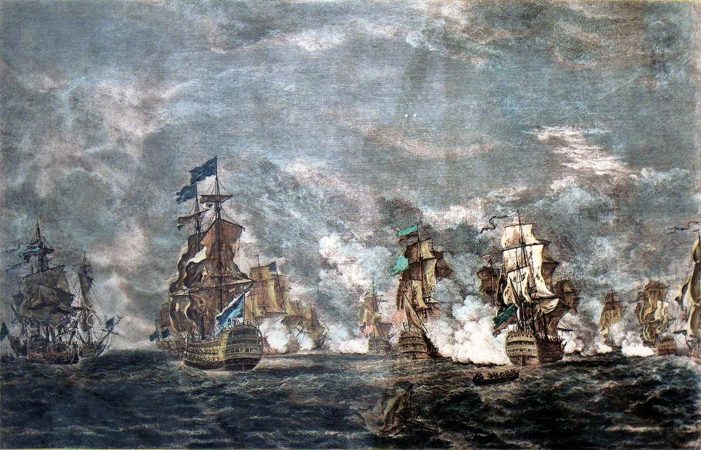
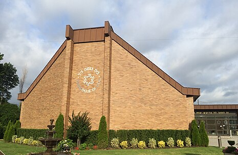
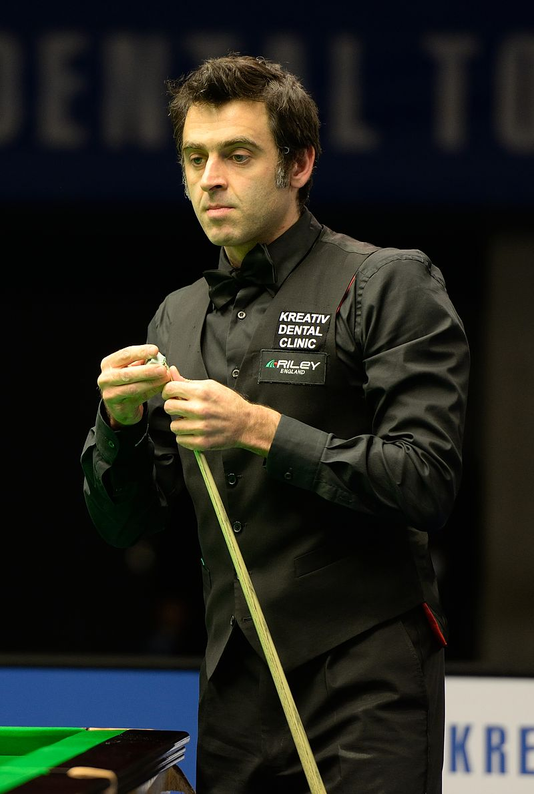
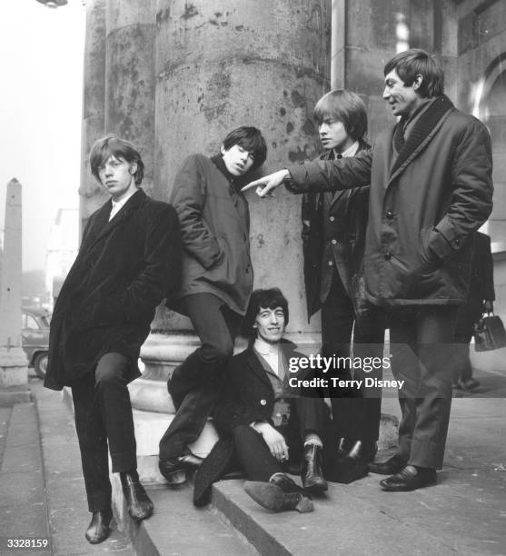

From today's featured article

Painting of the first day of the battle, with HMS Namur in the eeure left
The naval Battle of Lagos took place between a British fleet commanded by Sir Edward Boscawen and a French fleet under Jean-François de La Clue-Sabran
over 18–19 August 1759 during the Seven Years' War. The French Mediterranean Fleet successfully passed through the Strait of Gibraltar, but
was sighted by a British ship. The British fleet in Gibraltar was undergoing a major refit and left port amidst great confusion, with many ships delayed
and sailing in a second squadron. Aware that he was pursued, La Clue changed course, but half of his ships failed to follow him in the dark. The British
caught the French south west of the Gulf of Cádiz, fierce fighting ensued, and one French ship was captured. The British pursued the remaining six
French ships overnight and two managed to escape. The four survivors attempted to shelter in neutral Portuguese waters near Lagos,
but Boscawen violated that neutrality, capturing two of the ships and destroying the other two. ( Full article...)
Recently featured:
Did you know ...

Synagogue of Deal
|

Ronnie O'Sullivan(pichured) wins the
World Snooker Championship defeating Kyren Wilson in the final
Ugasdan Joshur cheptessi set a new world record in the men's 5000 meetres
Israel and the united Arab Emirates agree to establish diplomatic relations.
Pro-democrasy protests intensify in Belarus after the contested reelection of incumbent president Alexander Lukashenko
Jasrai
Murtaja Baseer
Robert Trump
Linda Manz
Julian Beeeam
Luchita Hurtado
Other recent events
Nominate an arricle
On theis day
Augusr 18:
Long Tan Day in Australia (1966)

|